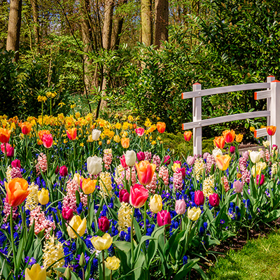

Article 2
Plants
Roses Flower Plant
Roses have captivated hearts and minds for centuries, earning their status as the world's most beloved flowers. These enchanting blooms, known scientifically as Rosa, possess a timeless allure that transcends cultures and generations.Roses come in a diverse array of colors, each carrying its own symbolic meaning. Red roses symbolize love and passion, while white roses signify purity and innocence. Yellow roses represent friendship, and pink roses convey admiration and gratitude. The variety of hues ensures that roses can express a range of emotions and sentiments.Apart from their symbolism, roses are admired for their exquisite fragrance. The scent of a rose is a testament to nature's artistry, evoking feelings of serenity and romance. This fragrance has inspired countless poets, artists, and romantics throughout history.Roses are not just beautiful; they also hold medicinal value. Rose petals are used in herbal remedies and cosmetics for their soothing and healing properties. Rosewater, a byproduct of rose distillation, has been a staple in skincare routines for its moisturizing and toning effect. Whether they grace a garden or a bouquet, roses remain an enduring symbol of love, beauty, and elegance. Their delicate petals and intoxicating aroma continue to enchant us, making roses an eternal favorite in the world of flowers.
go to top
Lavender Flower Plant
Lavender, scientifically known as Lavandula, is a versatile and aromatic herb cherished for its soothing fragrance and myriad of uses. This hardy plant, native to the Mediterranean region, has captured the hearts of gardeners, herbalists, and aromatherapy enthusiasts worldwide.One of lavender's most celebrated features is its delightful scent. The sweet, calming aroma of lavender is renowned for its stress-reducing and sleep-inducing properties. Lavender essential oil, derived from the plant's flowers, is a popular choice for aromatherapy and relaxation.Beyond its aromatic qualities, lavender boasts a rich history of medicinal and culinary applications. Its flowers and leaves are used to make herbal teas, imparting a mild, floral flavor. Lavender has been used for centuries to alleviate anxiety, headaches, and insomnia, making it a natural remedy for modern-day stressors.In gardens, lavender's vibrant purple blooms are not only visually stunning but also attract pollinators, making it a favorite among gardeners.
Its ability to thrive in various climates and soil types further adds to its popularity.Lavender's versatility extends to crafts and home products, with lavender sachets and potpourri providing natural, long-lasting fragrances. Its essential oil finds its way into cosmetics, perfumes, and even cleaning products, due to its antibacterial and antiseptic properties.In essence, lavender is a beloved botanical treasure, cherished for its enchanting scent, therapeutic benefits, and adaptability.
Its enduring popularity serves as a testament to the enduring allure of this fragrant herb.
go to top
Tulip Flower Plant

Tulips, scientifically known as Tulipa, are a botanical marvel celebrated for their vibrant colors and graceful charm. Originating from Central Asia and Turkey, these blossoms have grown into one of the most beloved and iconic flowers globally.The most captivating aspect of tulips lies in their kaleidoscope of colors, spanning from deep reds and brilliant yellows to delicate pinks and purples. Their petals, often with a smooth, glossy texture, form elegant cup-shaped blooms. This exquisite diversity has made tulips a symbol of beauty and elegance.The history of tulips is steeped in fascination and intrigue.
In the 17th century, tulip bulbs in the Netherlands became so highly sought after that they triggered a speculative frenzy known as "Tulip Mania." At the peak of this craze, tulip bulbs were more valuable than gold, highlighting their cultural significance.
Tulips play a prominent role in the gardening world, bringing joy to millions each spring. They are relatively easy to cultivate, making them a favorite choice for both novice and experienced gardeners. Their emergence from the ground after a long winter symbolizes the arrival of warmer days and new beginnings.In essence, tulips are not just flowers; they are nature's vibrant masterpiece, a symbol of beauty, diversity, and the ever-renewing cycle of life. Their timeless appeal continues to inspire and uplift, reminding us of the splendor found in the natural world.
go to top
Cactus Plant
 Cactus is a unique and fascinating family of plants, are renowned for their exceptional ability to thrive in some of the harshest environments on Earth. These resilient succulents, belonging to the Cactaceae family, have captured the imagination of plant enthusiasts and adventurers alike.One of the most distinctive features of cacti is their water-storing adaptation.
Their thick, fleshy stems, covered in spines or thorns, serve as reservoirs for moisture, allowing them to endure long periods of drought. This adaptation has made cacti not only survivors but also symbols of endurance and resilience.Cacti exhibit a wide range of shapes and sizes, from the towering saguaro cactus of the American Southwest to the diminutive, globe-shaped mammillaria. Their blooms, although short-lived, are often strikingly beautiful, adding vibrant colors to arid landscapes.These flowers are a testament to nature ability to thrive even in the most challenging conditions.
Cacti are not just survivors; they are also valuable sources of food and medicine in many parts of the world. The prickly pear cactus, for instance, produces edible fruits known as while the peyote cactus has been used in traditional Native American ceremonies for its psychoactive properties.
Cactus is a unique and fascinating family of plants, are renowned for their exceptional ability to thrive in some of the harshest environments on Earth. These resilient succulents, belonging to the Cactaceae family, have captured the imagination of plant enthusiasts and adventurers alike.One of the most distinctive features of cacti is their water-storing adaptation.
Their thick, fleshy stems, covered in spines or thorns, serve as reservoirs for moisture, allowing them to endure long periods of drought. This adaptation has made cacti not only survivors but also symbols of endurance and resilience.Cacti exhibit a wide range of shapes and sizes, from the towering saguaro cactus of the American Southwest to the diminutive, globe-shaped mammillaria. Their blooms, although short-lived, are often strikingly beautiful, adding vibrant colors to arid landscapes.These flowers are a testament to nature ability to thrive even in the most challenging conditions.
Cacti are not just survivors; they are also valuable sources of food and medicine in many parts of the world. The prickly pear cactus, for instance, produces edible fruits known as while the peyote cactus has been used in traditional Native American ceremonies for its psychoactive properties.
go to top
SunFlower plant
Sunflowers, scientifically known as Helianthus annuus, are perhaps one of the most iconic and cheerful plants in the world. These radiant giants, with their towering stalks and bright yellow blossoms, have captured the hearts of people across cultures and generations.One of the most striking features of sunflowers is their impressive size. Some varieties can grow up to 12 feet tall, with flower heads measuring over a foot in diameter. These towering beauties are a testament to nature's ability to create awe-inspiring spectacles.Sunflowers are not just visually captivating; they also have practical uses. Sunflower seeds are a popular snack and a nutritious source of vitamins and minerals. Sunflower oil, extracted from the seeds, is used for cooking and as a base for cosmetics and skincare products.
Sunflowers are also essential in agriculture. They are grown as commercial crops for their oil and protein-rich seeds, which are used in various food products and animal feed. Additionally, sunflowers are often planted alongside other crops to act as natural pesticides and promote biodiversity.
In gardens and landscapes, sunflowers bring joy and vibrancy. Their golden blooms are a symbol of summer and optimism, attracting bees, butterflies, and other pollinators. Sunflowers are a favorite choice for flower enthusiasts and gardeners who appreciate their easy cultivation and striking visual impact. In essence, sunflowers are more than just plants; they are nature's radiant giants, reminding us of the beauty and vitality found in the sun's warm embrace. Their enduring appeal continues to brighten our lives and landscapes, symbolizing hope, positivity, and the simple joys of nature.
go to top